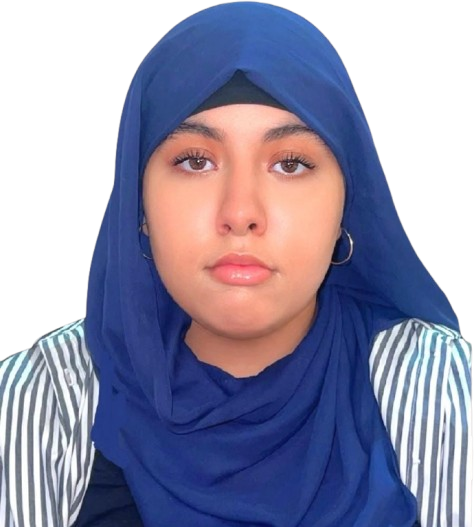

+212 626-325242 • hiba007chemlal@gmail.com • LinkedIn • Oulfa-Casablanca Maroc
Étudiante en 2ème année de Développement Digital à l'ISTA, j'aime transformer les idées en expériences web simples, modernes et fonctionnelles. Curieuse, créative et motivée, je suis actuellement à la recherche d'un stage qui me permettra de mettre en pratique mes connaissances, de contribuer à des projets concrets et de développer mes compétences en développement web au sein d'une équipe dynamique.
HTML5 • CSS3 • JavaScript • PHP • MySQL • Responsive Design • Algorithmique • Bases de données • Développement Web • Pack Office (Word/Excel/PowerPoint) • Gestion du temps • Travail en équipe
Arabe : Langue maternelle • Français : courant • Anglais : bon niveau
Développement Web • Technologie • Design • Création digitale • Veille technologique